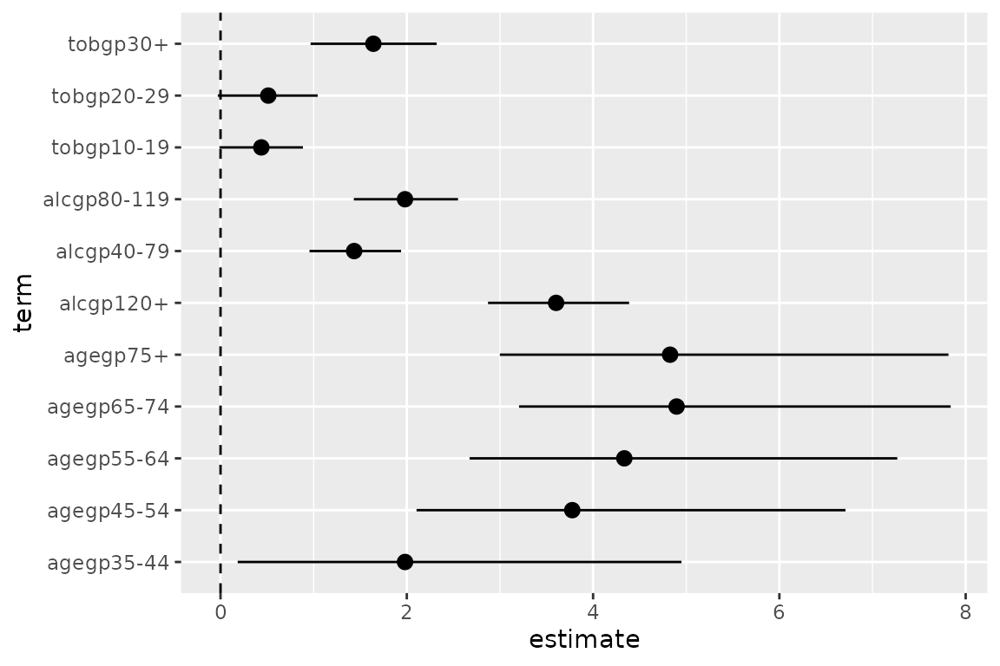
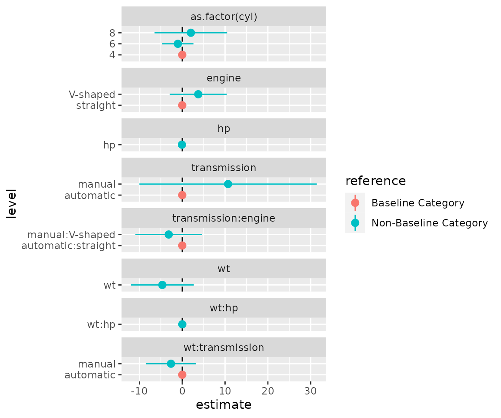

vignettes/tidycat.Rmd
tidycat.RmdThe tidycat package includes the tidy_categorical() function to expand broom::tidy() outputs for categorical parameter estimates.
You can install the released version of tidycat from CRAN with:
install.packages("tidycat")And the development version from GitHub with:
# install.packages("devtools")
devtools::install_github("guyabel/tidycat")The tidy() function in the broom package takes the messy output of built-in functions in R, such as lm(), and turns them into tidy data frames.
library(dplyr)
library(broom)
m0 <- esoph %>%
mutate_if(is.factor, ~factor(., ordered = FALSE)) %>%
glm(cbind(ncases, ncontrols) ~ agegp + tobgp + alcgp, data = ., family = binomial())
# tidy
tidy(m0)
#> # A tibble: 12 × 5
#> term estimate std.error statistic p.value
#> <chr> <dbl> <dbl> <dbl> <dbl>
#> 1 (Intercept) -6.90 1.09 -6.35 2.16e-10
#> 2 agegp35-44 1.98 1.10 1.79 7.28e- 2
#> 3 agegp45-54 3.78 1.07 3.54 4.07e- 4
#> 4 agegp55-64 4.34 1.07 4.07 4.69e- 5
#> 5 agegp65-74 4.90 1.08 4.55 5.39e- 6
#> 6 agegp75+ 4.83 1.12 4.30 1.67e- 5
#> 7 tobgp10-19 0.438 0.228 1.92 5.50e- 2
#> 8 tobgp20-29 0.513 0.273 1.88 6.04e- 2
#> 9 tobgp30+ 1.64 0.344 4.77 1.85e- 6
#> 10 alcgp40-79 1.43 0.250 5.74 9.63e- 9
#> 11 alcgp80-119 1.98 0.285 6.96 3.51e-12
#> 12 alcgp120+ 3.60 0.385 9.36 8.19e-21Note: Currently ordered factor not supported in tidycat, hence their removal in mutate_if() above
The tidy_categorical() function adds further columns (variable, level and effect) to the broom::tidy() output to help manage categorical variables
library(tidycat)
m0 %>%
tidy() %>%
tidy_categorical(m = m0, include_reference = FALSE)
#> # A tibble: 12 × 8
#> term estimate std.error statistic p.value variable level effect
#> <chr> <dbl> <dbl> <dbl> <dbl> <chr> <fct> <chr>
#> 1 (Intercept) -6.90 1.09 -6.35 2.16e-10 (Intercept) (Interc… main
#> 2 agegp35-44 1.98 1.10 1.79 7.28e- 2 agegp 35-44 main
#> 3 agegp45-54 3.78 1.07 3.54 4.07e- 4 agegp 45-54 main
#> 4 agegp55-64 4.34 1.07 4.07 4.69e- 5 agegp 55-64 main
#> 5 agegp65-74 4.90 1.08 4.55 5.39e- 6 agegp 65-74 main
#> 6 agegp75+ 4.83 1.12 4.30 1.67e- 5 agegp 75+ main
#> 7 tobgp10-19 0.438 0.228 1.92 5.50e- 2 tobgp 10-19 main
#> 8 tobgp20-29 0.513 0.273 1.88 6.04e- 2 tobgp 20-29 main
#> 9 tobgp30+ 1.64 0.344 4.77 1.85e- 6 tobgp 30+ main
#> 10 alcgp40-79 1.43 0.250 5.74 9.63e- 9 alcgp 40-79 main
#> 11 alcgp80-119 1.98 0.285 6.96 3.51e-12 alcgp 80-119 main
#> 12 alcgp120+ 3.60 0.385 9.36 8.19e-21 alcgp 120+ mainInclude additional rows for reference category terms and a column to indicate their location by setting include_reference = TRUE (default). Setting exponentiate = TRUE ensures the parameter estimates in the reference group are set to one instead of zero (even odds in the logistic regression example below).
m0 %>%
tidy(exponentiate = TRUE) %>%
tidy_categorical(m = m0, exponentiate = TRUE, reference_label = "Baseline") %>%
select(-statistic, -p.value)
#> # A tibble: 15 × 7
#> term estimate std.error variable level effect reference
#> <chr> <dbl> <dbl> <chr> <fct> <chr> <chr>
#> 1 (Intercept) 0.00101 1.09 (Intercept) (Intercept) main Non-Baseline
#> 2 <NA> 1 1 agegp 25-34 main Baseline
#> 3 agegp35-44 7.25 1.10 agegp 35-44 main Non-Baseline
#> 4 agegp45-54 43.7 1.07 agegp 45-54 main Non-Baseline
#> 5 agegp55-64 76.3 1.07 agegp 55-64 main Non-Baseline
#> 6 agegp65-74 134. 1.08 agegp 65-74 main Non-Baseline
#> 7 agegp75+ 125. 1.12 agegp 75+ main Non-Baseline
#> 8 <NA> 1 1 tobgp 0-9g/day main Baseline
#> 9 tobgp10-19 1.55 0.228 tobgp 10-19 main Non-Baseline
#> 10 tobgp20-29 1.67 0.273 tobgp 20-29 main Non-Baseline
#> 11 tobgp30+ 5.16 0.344 tobgp 30+ main Non-Baseline
#> 12 <NA> 1 1 alcgp 0-39g/day main Baseline
#> 13 alcgp40-79 4.20 0.250 alcgp 40-79 main Non-Baseline
#> 14 alcgp80-119 7.25 0.285 alcgp 80-119 main Non-Baseline
#> 15 alcgp120+ 36.7 0.385 alcgp 120+ main Non-BaselineThe results from broom::tidy() can be used to quickly plot estimated coefficients and their confidence intervals.
# store parameter estimates and confidence intervals (except for the intercept)
d0 <- m0 %>%
tidy(conf.int = TRUE) %>%
slice(-1)
d0
#> # A tibble: 11 × 7
#> term estimate std.error statistic p.value conf.low conf.high
#> <chr> <dbl> <dbl> <dbl> <dbl> <dbl> <dbl>
#> 1 agegp35-44 1.98 1.10 1.79 7.28e- 2 0.184 4.95
#> 2 agegp45-54 3.78 1.07 3.54 4.07e- 4 2.10 6.71
#> 3 agegp55-64 4.34 1.07 4.07 4.69e- 5 2.67 7.27
#> 4 agegp65-74 4.90 1.08 4.55 5.39e- 6 3.21 7.84
#> 5 agegp75+ 4.83 1.12 4.30 1.67e- 5 3.00 7.82
#> 6 tobgp10-19 0.438 0.228 1.92 5.50e- 2 -0.0116 0.885
#> 7 tobgp20-29 0.513 0.273 1.88 6.04e- 2 -0.0290 1.04
#> 8 tobgp30+ 1.64 0.344 4.77 1.85e- 6 0.967 2.32
#> 9 alcgp40-79 1.43 0.250 5.74 9.63e- 9 0.955 1.94
#> 10 alcgp80-119 1.98 0.285 6.96 3.51e-12 1.43 2.55
#> 11 alcgp120+ 3.60 0.385 9.36 8.19e-21 2.87 4.39
library(ggplot2)
library(tidyr)
ggplot(data = d0,
mapping = aes(x = term, y = estimate, ymin = conf.low, ymax = conf.high)) +
coord_flip() +
geom_hline(yintercept = 0, linetype = "dashed") +
geom_pointrange()
The additional columns from tidy_categorical() can be used to group together terms from the same categorical variable by setting colour = variable
d0 <- m0 %>%
tidy(conf.int = TRUE) %>%
tidy_categorical(m = m0, include_reference = FALSE) %>%
slice(-1)
d0 %>%
select(-(3:5))
#> # A tibble: 11 × 7
#> term estimate conf.low conf.high variable level effect
#> <chr> <dbl> <dbl> <dbl> <chr> <fct> <chr>
#> 1 agegp35-44 1.98 0.184 4.95 agegp 35-44 main
#> 2 agegp45-54 3.78 2.10 6.71 agegp 45-54 main
#> 3 agegp55-64 4.34 2.67 7.27 agegp 55-64 main
#> 4 agegp65-74 4.90 3.21 7.84 agegp 65-74 main
#> 5 agegp75+ 4.83 3.00 7.82 agegp 75+ main
#> 6 tobgp10-19 0.438 -0.0116 0.885 tobgp 10-19 main
#> 7 tobgp20-29 0.513 -0.0290 1.04 tobgp 20-29 main
#> 8 tobgp30+ 1.64 0.967 2.32 tobgp 30+ main
#> 9 alcgp40-79 1.43 0.955 1.94 alcgp 40-79 main
#> 10 alcgp80-119 1.98 1.43 2.55 alcgp 80-119 main
#> 11 alcgp120+ 3.60 2.87 4.39 alcgp 120+ main
ggplot(data = d0,
mapping = aes(x = term, y = estimate, ymin = conf.low, ymax = conf.high,
colour = variable)) +
coord_flip() +
geom_hline(yintercept = 0, linetype = "dashed") +
geom_pointrange()The additional rows from tidy_categorical() can be used to include the reference categories in a coefficient plot, allowing the reader to better grasp the meaning of the parameter estimates in each categorical variable. Using ggforce::facet_col() the terms of each variable can be separated to further improve the presentation of the coefficient plot.
d0 <- m0 %>%
tidy(conf.int = TRUE) %>%
tidy_categorical(m = m0) %>%
slice(-1)
d0 %>%
select(-(3:5))
#> # A tibble: 14 × 8
#> term estimate conf.low conf.high variable level effect reference
#> <chr> <dbl> <dbl> <dbl> <chr> <fct> <chr> <chr>
#> 1 <NA> 0 0 0 agegp 25-34 main Baseline C…
#> 2 agegp35-44 1.98 0.184 4.95 agegp 35-44 main Non-Baseli…
#> 3 agegp45-54 3.78 2.10 6.71 agegp 45-54 main Non-Baseli…
#> 4 agegp55-64 4.34 2.67 7.27 agegp 55-64 main Non-Baseli…
#> 5 agegp65-74 4.90 3.21 7.84 agegp 65-74 main Non-Baseli…
#> 6 agegp75+ 4.83 3.00 7.82 agegp 75+ main Non-Baseli…
#> 7 <NA> 0 0 0 tobgp 0-9g/day main Baseline C…
#> 8 tobgp10-19 0.438 -0.0116 0.885 tobgp 10-19 main Non-Baseli…
#> 9 tobgp20-29 0.513 -0.0290 1.04 tobgp 20-29 main Non-Baseli…
#> 10 tobgp30+ 1.64 0.967 2.32 tobgp 30+ main Non-Baseli…
#> 11 <NA> 0 0 0 alcgp 0-39g/day main Baseline C…
#> 12 alcgp40-79 1.43 0.955 1.94 alcgp 40-79 main Non-Baseli…
#> 13 alcgp80-119 1.98 1.43 2.55 alcgp 80-119 main Non-Baseli…
#> 14 alcgp120+ 3.60 2.87 4.39 alcgp 120+ main Non-Baseli…
library(ggforce)
ggplot(data = d0,
mapping = aes(x = level, y = estimate, colour = reference,
ymin = conf.low, ymax = conf.high)) +
facet_col(facets = vars(variable), scales = "free_y", space = "free") +
coord_flip() +
geom_hline(yintercept = 0, linetype = "dashed") +
geom_pointrange()Note the switch of the x aesthetic to the level column rather than term.
Alternatively, horizontal plots can be obtained using ggforce::facet_row() and loosing coord_flip();
ggplot(data = d0,
mapping = aes(x = level, y = estimate,
ymin = conf.low, ymax = conf.high,
colour = reference)) +
facet_row(facets = vars(variable), scales = "free_x", space = "free") +
geom_hline(yintercept = 0, linetype = "dashed") +
geom_pointrange() +
theme(axis.text.x = element_text(angle = 45, hjust = 1))Models with interactions can also be handled in tidy_categorical(). Using the mtcars data we can create three types of interactions (between two numeric variables, between a numeric variable and categorical variable and between two categorical variables)
m1 <- mtcars %>%
mutate(engine = recode_factor(vs, `0` = "straight", `1` = "V-shaped"),
transmission = recode_factor(am, `0` = "automatic", `1` = "manual")) %>%
lm(mpg ~ as.factor(cyl) + wt * hp + wt * transmission + engine * transmission , data = .)
tidy(m1)
#> # A tibble: 10 × 5
#> term estimate std.error statistic p.value
#> <chr> <dbl> <dbl> <dbl> <dbl>
#> 1 (Intercept) 35.5 12.3 2.89 0.00843
#> 2 as.factor(cyl)6 -1.03 1.76 -0.585 0.565
#> 3 as.factor(cyl)8 2.01 4.09 0.492 0.628
#> 4 wt -4.65 3.55 -1.31 0.203
#> 5 hp -0.0731 0.0577 -1.27 0.218
#> 6 transmissionmanual 10.7 10.0 1.07 0.296
#> 7 engineV-shaped 3.74 3.21 1.16 0.257
#> 8 wt:hp 0.0134 0.0162 0.828 0.416
#> 9 wt:transmissionmanual -2.63 2.83 -0.930 0.362
#> 10 transmissionmanual:engineV-shaped -3.16 3.76 -0.842 0.409Setting n_level = TRUE creates an additional column to monitor the number of observations in each of level of the categorical variables, including interaction terms in the model:
d1 <- m1 %>%
tidy(conf.int = TRUE) %>%
tidy_categorical(m = m1, n_level = TRUE) %>%
slice(-1)
d1 %>%
select(-(2:7))
#> # A tibble: 16 × 6
#> term variable level effect reference n_level
#> <chr> <chr> <fct> <chr> <chr> <dbl>
#> 1 <NA> as.factor… 4 main Baseline … 11
#> 2 as.factor(cyl)6 as.factor… 6 main Non-Basel… 7
#> 3 as.factor(cyl)8 as.factor… 8 main Non-Basel… 14
#> 4 wt wt wt main Non-Basel… NA
#> 5 hp hp hp main Non-Basel… NA
#> 6 <NA> transmiss… autom… main Baseline … 19
#> 7 transmissionmanual transmiss… manual main Non-Basel… 13
#> 8 <NA> engine strai… main Baseline … 18
#> 9 engineV-shaped engine V-sha… main Non-Basel… 14
#> 10 wt:hp wt:hp wt:hp inter… Non-Basel… NA
#> 11 <NA> wt:transm… autom… inter… Baseline … 19
#> 12 wt:transmissionmanual wt:transm… manual inter… Non-Basel… 13
#> 13 <NA> transmiss… autom… inter… Baseline … 25
#> 14 <NA> transmiss… manua… inter… Non-Basel… 0
#> 15 <NA> transmiss… autom… inter… Non-Basel… 0
#> 16 transmissionmanual:engineV-shaped transmiss… manua… inter… Non-Basel… 7We can use similar plotting code as above to plot the interactions:
ggplot(data = d1,
mapping = aes(x = level, y = estimate, colour = reference,
ymin = conf.low, ymax = conf.high)) +
facet_col(facets = "variable", scales = "free_y", space = "free") +
coord_flip() +
geom_hline(yintercept = 0, linetype = "dashed") +
geom_pointrange()The empty levels can be dropped by filtering on the n_level column for categories with more than zero observations and not NA in term column.
d1 %>%
dplyr::filter(n_level > 0 | !is.na(term)) %>%
ggplot(mapping = aes(x = level, y = estimate, colour = reference,
ymin = conf.low, ymax = conf.high)) +
facet_col(facets = "variable", scales = "free_y", space = "free") +
coord_flip() +
geom_hline(yintercept = 0, linetype = "dashed") +
geom_pointrange()
If you have any trouble or suggestions please let me know by creating an issue on the tidycat Github